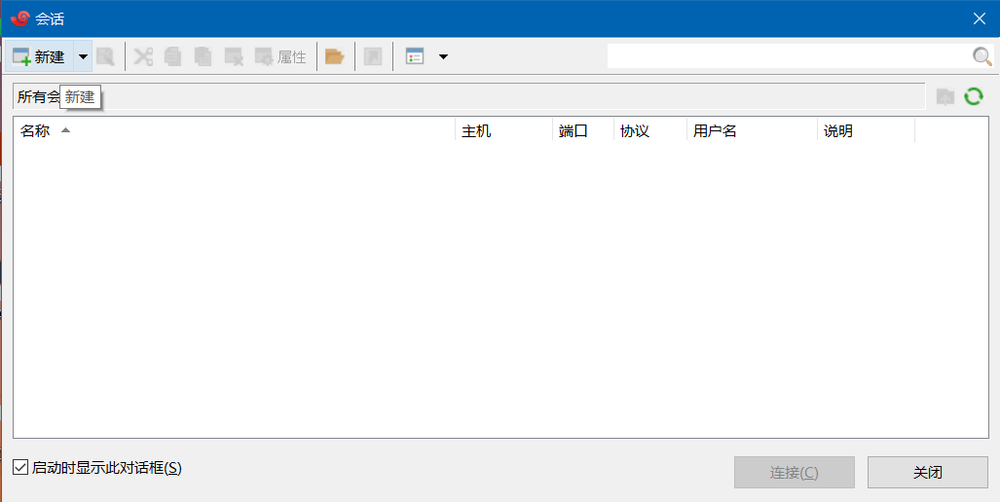
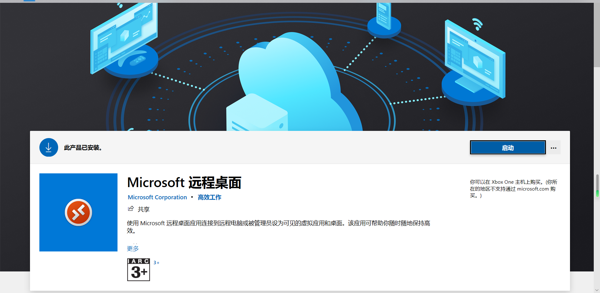
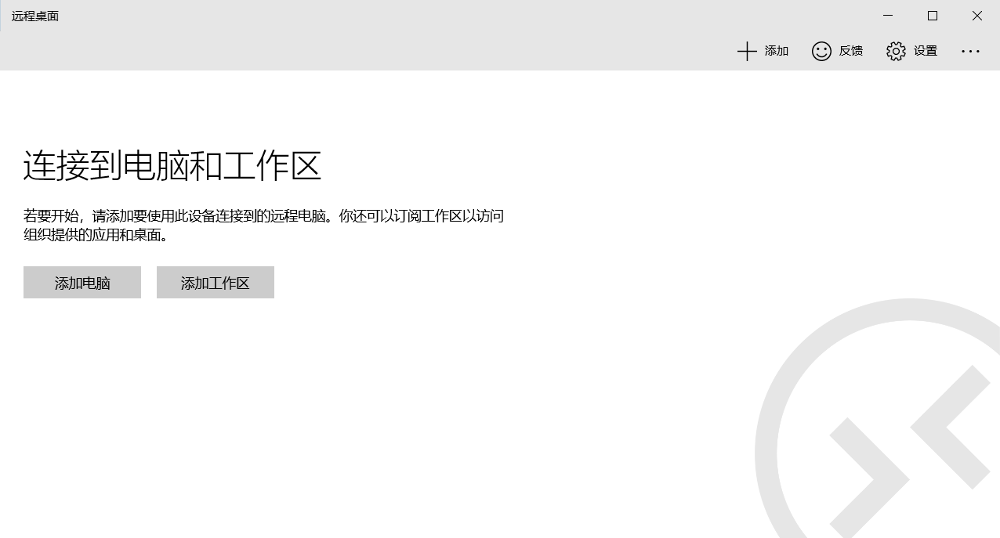

初次使用树莓派
树莓派4B是一款尺寸仅有银行卡大小的电脑，可以用于制作机器人大脑、智能家庭控制中心以及桌面级电脑，售价$35起。为众多科创爱好者提供低成本的入门方式。
详情请访问官网或者树莓派实验室。
系统烧录
- 将SD卡插入电脑
- 使用Raspberry Pi imager

- 无屏幕配置SSH和网络
打开装有树莓派系统的U盘，在根目录下新建文本文档
将文件名字（包括.txt在内）改为SSH
再次新建文本文件，打开并输入以下内容其中，priority数字越大，优先级越高1
2
3
4
5
6
7
8
9
10
11
12
13
14
15
16
17
18country=CN
ctrl_interface=DIR=/var/run/wpa_supplicant GROUP=netdev
update_config=1
network={
ssid="WiFi-A"
psk="12345678"
key_mgmt=WPA-PSK
priority=1
}
network={
ssid="WiFi-B"
psk="12345678"
key_mgmt=WPA-PSK
priority=2
scan_ssid=1
}
保存并退出，将文件名改为wpa_supplicant.conf - 将烧写好程序的SD卡插入树莓派
远程连接
- 将树莓派接入电源
- 确定树莓派IP地址
- 使用SSH连接树莓派
- 打开Xshell
- 点击新建
 - 在弹出的窗口中输入名称以及IP地址

- 输入用户名和密码
默认用户名：pi
默认密码：raspberry
- 成功连接
在弹出的界面中点击“接受并保存”
出现以下画面表示连接成功
- 使用Windows终端进行SSH连接
在终端（Powershell）中输入ssh user@IPAddress
user替换成自己的账户名，一般为pi
IPAddress替换成树莓派的IP地址
输入密码后即可远程连接树莓派（密码不在屏幕上显示）
使用远程桌面连接树莓派
- 打开Xshell
- 安装xrdp
在SSH中输入
apt-get install tightvncserver xrdp

- 远程桌面软件
在Windows10、App Store、Google play等应用商店中均可下载，本文以Windows10版本为例，其它Windows版本可在此下载。 - 下载、安装、启动
 - 添加远程电脑
打开远程桌面后，点击右上角添加即可添加电脑

- 填写树莓派IP地址并添加用户
用户名和密码与SSH连接时的用户名和密码一致
用户名：pi
密码：raspberry
- 点击新建的电脑
- 点击
仍然连接后，就可以进入树莓派桌面
尽情地享受树莓派之旅吧